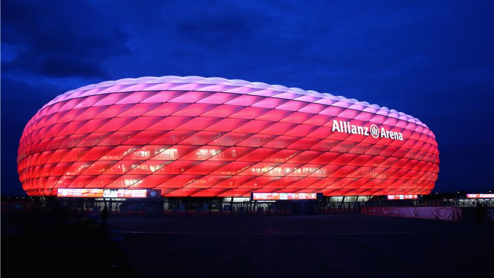

[알리안츠 아레나 소개 영상]
위치 : 독일 바이에른 뮌헨
준공 : 2002년 10월 21일
개장 : 2005년 5월 30일
운영 / 소유 : 알리안츠 아레나 GmbH
경기장 규모 : 105 x 68m
좌석 수 : 국내 경기 - 75,000석(입석 13,740석) / 국제 경기 - (전석 좌석화) - 70,000석
준공비 : 3억 4,000만 유로 (한화 약 4,596억원
UEFA 명칭 : 푸스발 아레나 뮌헨 (UEFA의 규정에 따라 UEFA 주관 대회에서는 스폰서 이름이 들어간 명칭은 사용하지 못한다.)
알리안츠 아레나의 가장 큰 특징은 경기장 외관의 조명을 자유자재로 바꿀 수 있다는 점입니다.
기념일에 따라, 또는 라이벌 경기나 국가대표팀의 경기일 경우 등 특정 상황마다 조명을 바꾸는 퍼포먼스를 보여줍니다.

경기장 외부의 패널은 불연성 소재며 절대 불에 타지 않습니다. 덕분에 독일 화재방호 기술상을 2년 연속 수상하기도 하였습니다.
이런 독특한 외관 덕에 고무보트라는 별명도 가지게 되었습니다.
경기장의 지붕은 전 좌석을 커버하며, 비가 수직으로 내릴 시에 관중은 비를 맞지 않습니다. 천장 패널 또한 투명하기 때문에 거대 규모의 경기장 치고는 채광도 매우 좋으며 잔디 상태도 최상급입니다.
선수 입장 터널의 구조가 다른 구장과는 다르게 기계로 문을 열면 땅에 있던 문이 위로 올라가며 그 아래에 있는 입구에서 선수들이 나오는 방식입니다.
강원대학교 | 컴퓨터과학전공 | 201912437 | 권구성
웹프로그래밍 기말 프로젝트